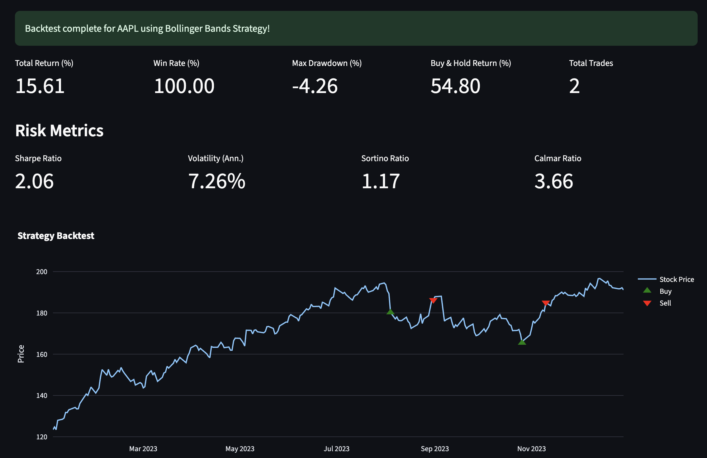
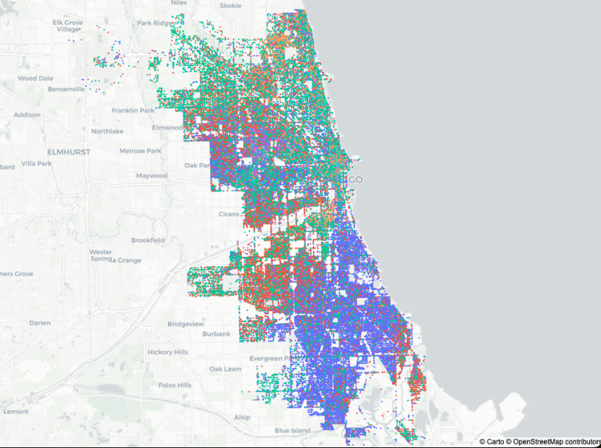
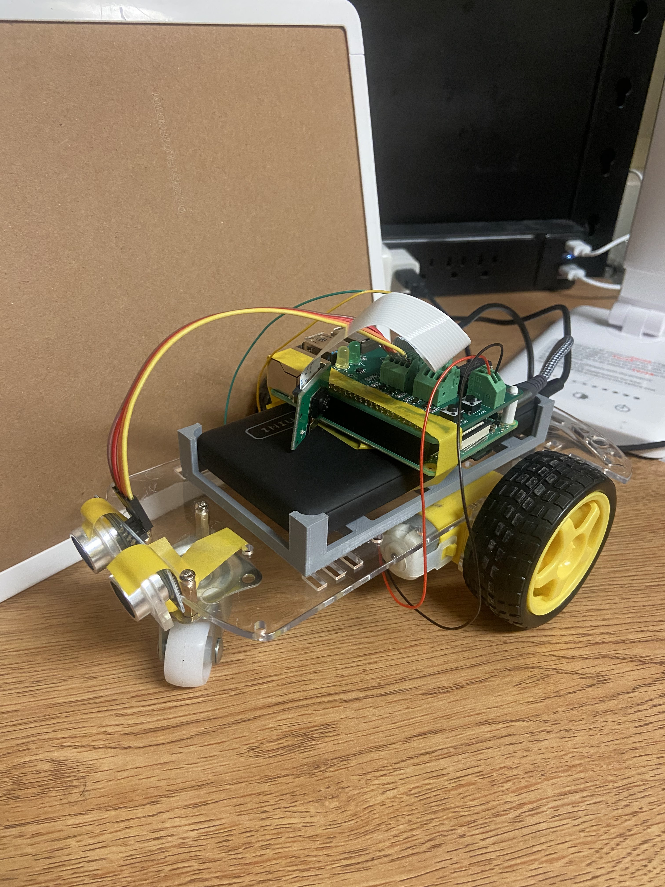
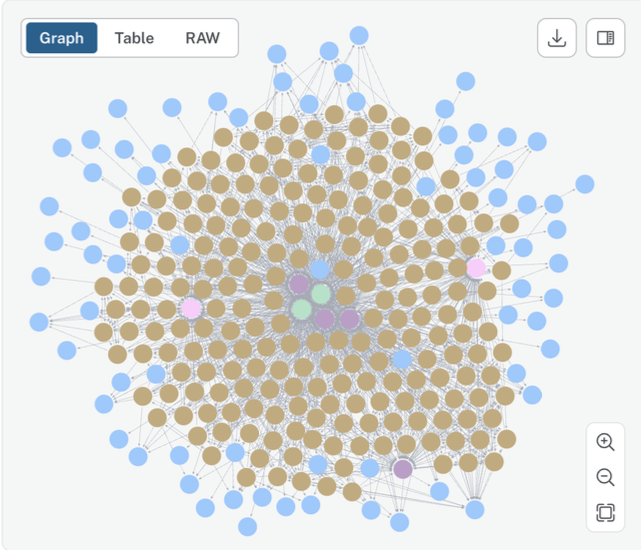

Border Cross
A daily geography puzzle game where players navigate from a starting country to a target country by only naming countries that share a physical land border. Inspired by my love for geography and games like Globle.
Technologies: React, Vite, TailwindCSS, react-simple-maps, TopoJSON
Simulation-Based Inference (URES)
Undergraduate research supervised by Prof. Yuexi Wang applying rejection ABC and Neural Posterior Estimation to a simulated Lotka–Volterra dataset and a stock volatility example, comparing method performance and robustness.
Technologies: Python, Neural Posterior Estimation, Reject ABC
Reel It
In ProgressA mobile app for rating and sharing movies with friends, inspired by Beli but for movies.
Technologies: Expo, React Native, TypeScript, Supabase

Quant-Dash: Quantitative Trading Dashboard
An interactive Streamlit dashboard for quantitative trading analysis, featuring real-time market data visualization, strategy backtesting, and portfolio performance metrics.
Technologies: Pandas, Plotly, Render, YFinance API, Streamlit
RetailRadar: Reddit Stock Sentiment Analysis
An interactive web dashboard that analyzes Reddit posts to uncover real-time sentiment trends around publicly traded stocks, combining NLP with financial data to visualize retail investor opinion.
Technologies: SQLite, Pandas, FinBERT, PRAW, Cron, Streamlit

Predictive Crime Analysis
Developed a machine learning model to predict crime hotspots in Chicago using historical data paired with LSTM and RandomForest models as part of research at altREU Teuscher Lab.
Technologies: Python, Pandas, Flask, TensorFlow

Search & Rescue
Developed a robot using sensors, cameras, and a RaspberryPi that navigates obstacles and identifies objects and humans as part of the John Deere-sponsored HackIllinois 2024 Hackathon.
Technologies: Python, OpenCV, RaspberryPi, TensorFlow, VNC Viewer

Patient Similarity Matching
Generated meaningful patient knowledge graphs using OpenAI and Node2Vec embeddings to enable AI-driven predictions of diseases and treatments as part of my internship at Prognosis.
Technologies: Neo4J, NextJS, Node2Vec, OpenAI API, JavaScript, Python
Deepfake Detection
Designed and implemented an XceptionNet + Transfer Learning hybrid model to detect deepfakes in image and video content.
Technologies: XceptionNet, Transfer Learning, Yunet Face Zoom, ViT